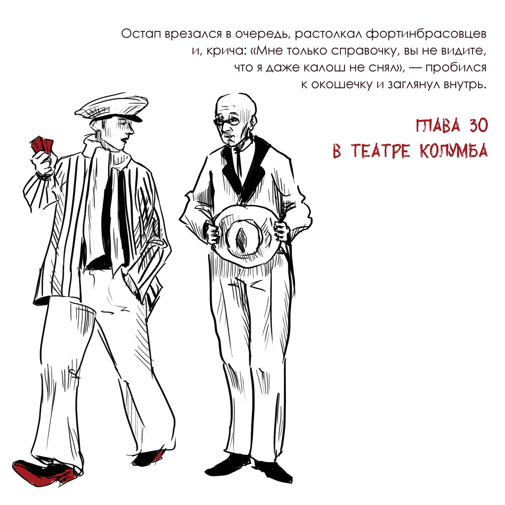
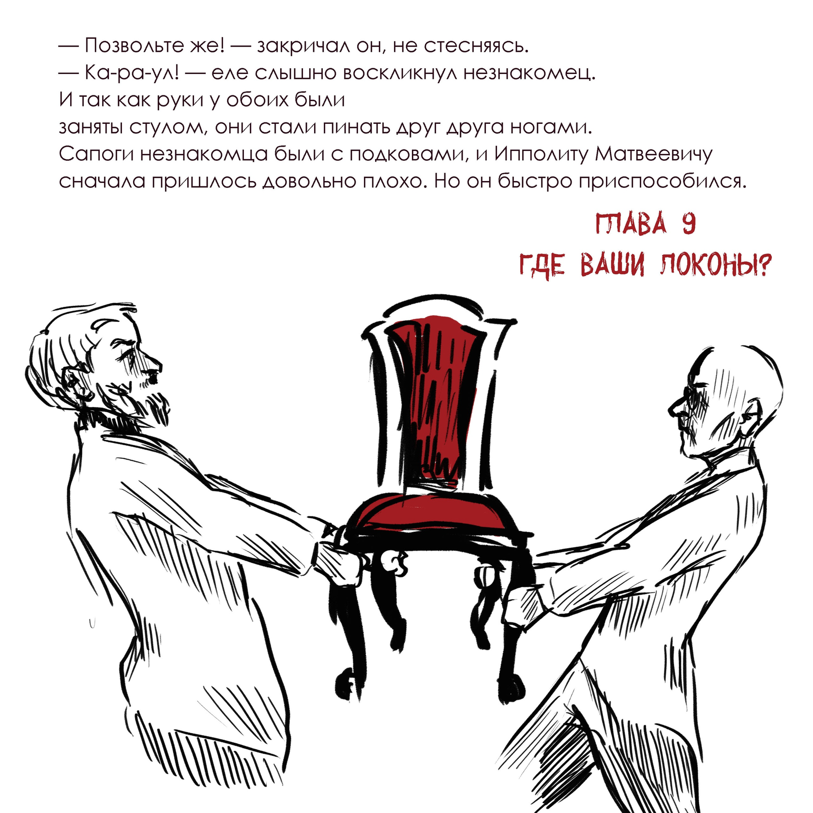

Запуск подкаста «В книге всё было по-другому»
Самый интересующий вопрос – это почему некоторые главы не вошли в итоговый вариант произведения? Заранее можно предположить, что они не имели никакой дополнительной сюжетной нагрузки, попросту казались неудачными или не прошли цензуру. Какие варианта романа существуют и какой из них выбрать? В этой статье мы дополняем наш выпуск по произведению Ильфа и Петрова интересной информацией. Так как киоски обчищала растущая аудитория романа, то в июле этого же года вышла полноценная книга со всеми главами сразу. Издательство Зиф напечатало «Двенадцать стульев» тиражом в 7 000 экземпляров. В 1929 году книгу издала библиотека «Огонёк». Это издание отличалось своей краткостью. В нем были только самые важные, запоминающиеся и яркие главы — ничего «лишнего»! Книга стоила 15 копеек, читалась быстро и часто передавалась из рук в руки. Такой ход был своего рода рекламой. Задача издания состояла в том, чтобы быстро произвести впечатление и популяризировать произведение. И план сработал — аудитория стала гораздо шире.
 -
По книге Роберта Льюиса Стивенсона сняли множество совершенно разных экранизаций. Какие-то полностью показывают сюжет, а какие-то изменяют общую концепцию произведения или его элементы. Фильм «Доктор Джекил и Мисс Хайд» - это именно второй случай.
- Фильм вышел в 1995 году.
- Страна выпуска — Великобритания и Канада.
- Режиссёр Дэвид Прайс.
- По времени он идёт 1 час и 26 минут.
- Возрастное ограничение — 16+.
- Жанр картины: комедия и мелодрама. Первое, что может показаться странным —это жанр произведения. Странная история… Стивенсона — это готический роман, мистика, но как только вы начинаете смотреть фильм, то сразу всё становится понятно. Автор экранизации меняет основной посыл книги, и фильм получается насыщенным различными шутками, иронией, пошлостями и всем тем, что заставит вас посмеяться.